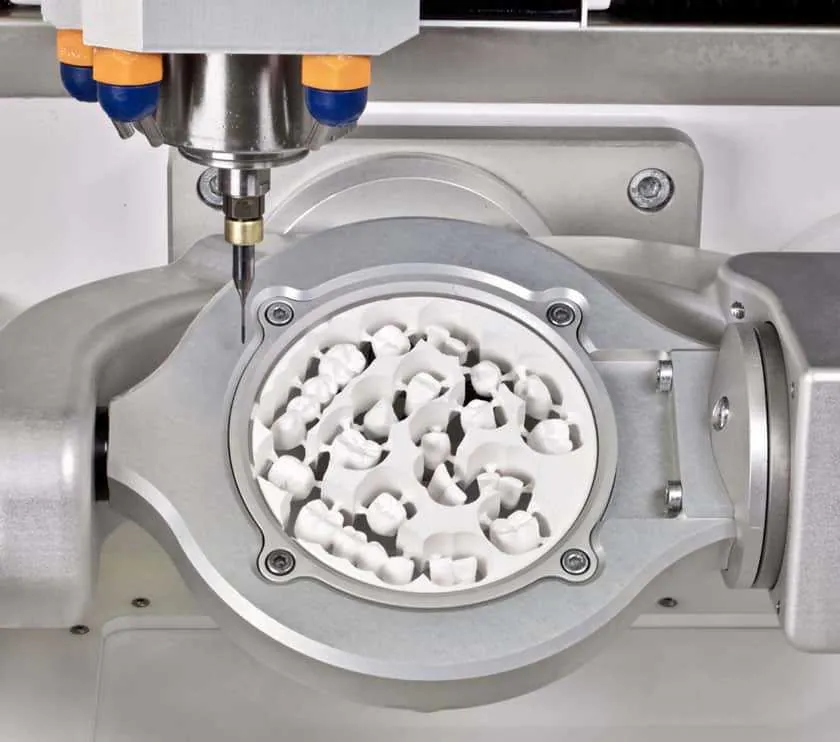

In unserer Fräsmaschine entstehen Zahnersatz und Gerüste aus Zirkon und anderen biokompatiblen Materialien. Die digitale Fertigung arbeitet äußerst präzise und gleichbleibend genau.
Das Ergebnis ist eine hohe Passgenauigkeit, die den Aufwand bei der Anprobe gering hält. Durch die digitalen Abläufe schließen wir Arbeiten zeitnah ab.
- Digitale, äußerst präzise Fertigung
- Ausschließlich biokompatible Materialien
- Zeitnaher Abschluss durch digitale Abläufe
